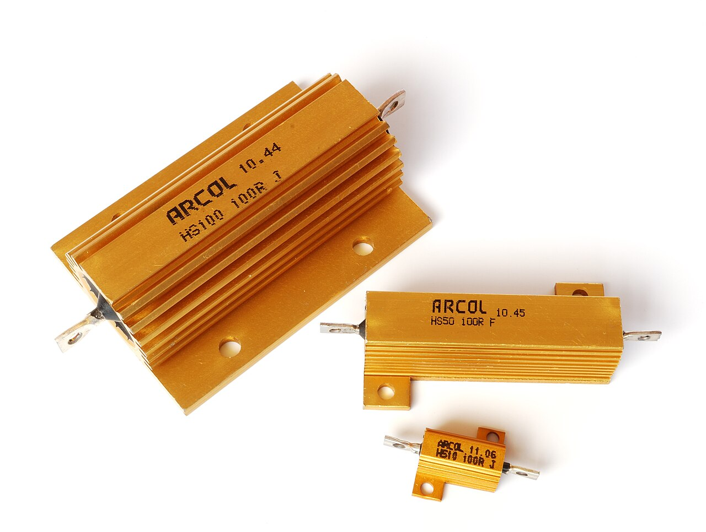
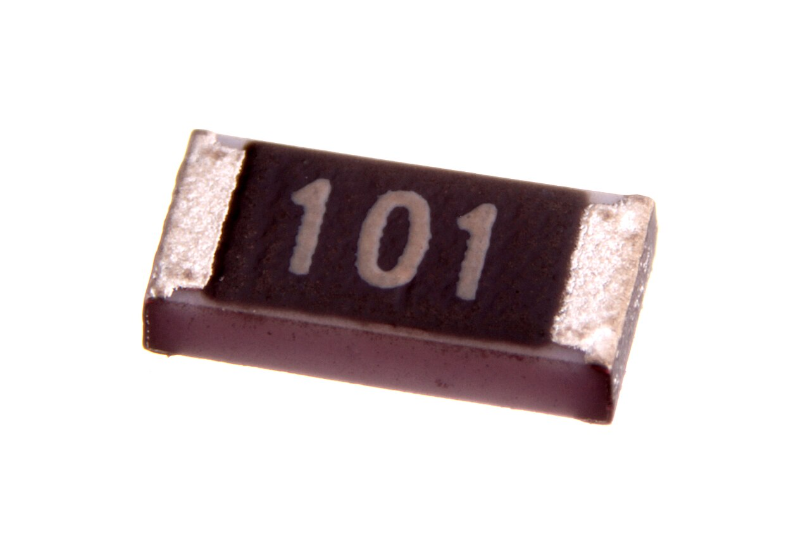
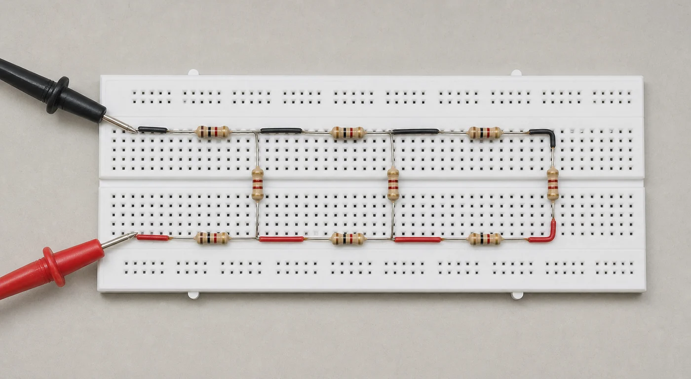

ANÁLISE DA CONVERGÊNCIA EM UMA ESCADA DE RESISTORES
montagem experimental do “varal” com três degraus
RELATÓRIO-MODELO · DADOS EXPERIMENTAIS SIMULADOS
RESUMO
As associações de resistores em série e em paralelo permitem construir redes cuja resistência equivalente depende não apenas dos componentes, mas também da forma como eles são conectados. Neste trabalho, estudou-se uma rede em escada, conhecida como “varal” de resistores, com o propósito de relacionar sua montagem física ao modelo de circuitos de corrente contínua e investigar a convergência de sua resistência de entrada. O procedimento envolveu o reconhecimento dos instrumentos, a medição dos componentes, a montagem progressiva dos degraus e a comparação entre as previsões teóricas e as leituras obtidas. Os resultados acompanharam a tendência prevista e mostraram rápida aproximação ao limite da escada infinita. A discussão indicou que as pequenas diferenças observadas são compatíveis com a incerteza instrumental, a tolerância dos resistores e as resistências parasitas das conexões. Concluiu-se que a quantidade de degraus montada é suficiente para observar a convergência na resolução disponível, sem que isso signifique igualdade exata entre uma rede finita e seu limite matemático.
Palavras-chave: resistência equivalente; associação de resistores; rede em escada; autossemelhança; incerteza de medição.
SUMÁRIO
1 INTRODUÇÃO
1.1 Resistência elétrica e associações
A corrente elétrica corresponde ao movimento orientado de cargas. Quando se estabelece uma diferença de potencial entre dois pontos de um condutor, o campo elétrico transfere energia às cargas, enquanto as interações com o material dificultam seu movimento e dissipam energia, principalmente na forma de calor. A resistência elétrica quantifica essa oposição: para um elemento ôhmico, \(R=V/I\), em ohms (Ω). Ela depende do material e da geometria, \(R=\rho L/A\), e a potência dissipada pode ser escrita como \(P=VI=I^2R=V^2/R\) (Halliday; Resnick; Walker, 2023).
Em uma associação em série há somente um caminho para a corrente. A mesma corrente atravessa todos os elementos e as quedas de potencial se somam; pela lei das malhas, \(V=I(R_1+R_2+\cdots)\). Portanto, \(R_\mathrm{eq}=R_1+R_2+\cdots\): acrescentar um resistor em série aumenta a resistência equivalente e reduz a corrente para uma tensão fixa.
Em paralelo, os terminais de cada ramo compartilham a mesma tensão, mas a corrente se divide. Pela lei dos nós, as correntes dos ramos se somam e \(1/R_\mathrm{eq}=1/R_1+1/R_2+\cdots\). Um novo ramo oferece outro caminho, aumenta a condutância total e diminui a resistência equivalente, que é sempre menor que a menor resistência individual (Ling; Moebs; Sanny, 2016).
1.2 Resistores como componentes
O resistor é o componente fabricado para fornecer uma resistência especificada. Modelos axiais de filme de carbono ou de metal possuem dois terminais e são adequados à protoboard: cada terminal deve entrar em um grupo elétrico diferente, sem encostar em outro terminal. As faixas de cores informam valor nominal e tolerância; a folha de dados também informa potência máxima e coeficiente de temperatura. Antes da montagem, convém conferir o código e medir cada unidade com o circuito desenergizado.
A construção define a aplicação. Resistores de filme metálico oferecem tolerâncias estreitas e boa estabilidade; os de fio enrolado e os encapsulados em alumínio suportam potências maiores; os SMD ocupam pouca área e são soldados diretamente à placa. A escolha deve considerar resistência, tolerância, potência, temperatura e encapsulamento — não apenas o número impresso ou as cores (Vishay, [s. d.]a; Vishay, [s. d.]b; Vishay, [s. d.]c).
 (a) Axiais para montagem através de furos.
(a) Axiais para montagem através de furos.

(b) Resistores de potência em alumínio.
(c) Resistor SMD no encapsulamento 1206.Fontes: (a) Evan-Amos, domínio público; (b) Harke, CC BY-SA 3.0; (c) oomlout, CC BY-SA 2.0 — via Wikimedia Commons. Acesso em: 1 set. 2026.
{kind=link}
{kind=link}
{kind=link}
2 OBJETIVOS
Este trabalho teve como objetivos investigar a convergência da resistência de entrada do varal para o limite teórico da escada infinita e familiarizar os estudantes com os componentes e instrumentos de circuitos de corrente contínua — fonte, multímetro, resistores, jumpers e protoboard. Buscou-se ainda reconhecer conexões e funções de medição, montar a rede progressivamente, comparar teoria e experimento e avaliar quantos degraus permitem observar a convergência.
3 REFERENCIAL TEÓRICO
3.1 Montagem e leitura do “varal”
O varal é uma rede em escada com dois ramos horizontais unidos por resistores verticais. Na Figura 2, cada degrau contém dois resistores horizontais e o resistor vertical seguinte, todos de resistência \(R\). A e B são os terminais de entrada, entre os quais se mede \(R_{AB}\).
Na protoboard, a montagem avança da esquerda para a direita sobre duas sequências de grupos de contatos separados. Os resistores horizontais ligam grupos consecutivos, e cada resistor vertical une os nós superior e inferior do mesmo degrau. Cada nó físico deve ser conferido com o esquema; durante a medição de resistência, a fonte fica desligada e desconectada.
Fonte: elaboração própria (2026).
3.2 Construção para um a quatro degraus
Como indica a Figura 2, os dois resistores de entrada contribuem com \(2R\), enquanto o vertical \(R\) fica em paralelo com a escada restante. Com um degrau, porém, há um único percurso de A a B: resistor superior, resistor vertical e resistor inferior, todos em série. Ao acrescentar o segundo degrau, a escada anterior ocupa um dos caminhos em paralelo. Repetindo essa redução, obtêm-se os quatro primeiros casos:
3.3 Recorrência e limite infinito
O padrão anterior pode ser generalizado. Para \(N\geq2\), a escada de \(N-1\) degraus está em paralelo com o resistor vertical do primeiro degrau; o resultado fica em série com os dois resistores de entrada:
Feynman, Leighton e Sands (2011, cap. 22, seção 22–6) deduzem o resultado geral de uma escada infinita com impedância série \(z_1\) e impedância transversal \(z_2\). A obra fornece a equação de autossemelhança e sua solução; ela não apresenta pronto o valor específico deste varal. Aqui, faz-se a especialização didática \(z_1=2R\) e \(z_2=R\):
Descarta-se a raiz negativa, incompatível com uma rede passiva. Embora \(R_N\) se aproxime do limite por cima, nenhuma escada finita é literalmente infinita.
4 MATERIAIS E MÉTODOS
4.1 Materiais
- nove resistores de filme de carbono, 10 kΩ, 1/4 W e tolerância nominal de 5%;
- uma protoboard, doze jumpers e etiquetas para numerar os componentes;
- uma fonte CC ajustável, utilizada apenas na etapa inicial de familiarização;
- um multímetro digital Fluke 17B+, faixa de 40,00 kΩ, resolução de 0,01 kΩ e exatidão declarada de ±(0,5% da leitura + 2 dígitos) (Fluke, [s. d.]).
4.2 Procedimento experimental
Identificaram-se as conexões da protoboard, os terminais dos resistores e as funções da fonte e do multímetro. Antes do ohmímetro, a fonte foi desligada e desconectada; toda resistência foi medida com a rede desenergizada. Os componentes foram numerados e medidos individualmente. Em seguida, montaram-se um, dois e três degraus, conferindo os nós com a Figura 2. Em cada etapa, realizaram-se três leituras entre A e B, sem tocar nas partes metálicas.

PLACEHOLDER — SUBSTITUIR PELA FOTO DO GRUPOFonte: imagem ilustrativa gerada para este relatório-modelo (2026). Não representa uma montagem ou observação experimental real.
Orientação ao aluno: no relatório real, substitua esta imagem por uma fotografia própria, nítida e legendada, na qual seja possível identificar a protoboard, os três degraus, os terminais A e B e a posição das pontas de prova.
4.3 Tratamento dos dados
Calcularam-se média, desvio-padrão amostral, incerteza da média \(u(\overline{R})=s/\sqrt{n}\) e diferença relativa \(100(R_\mathrm{med}-R_\mathrm{teo})/R_\mathrm{teo}\). Na avaliação tipo B, dividiu-se o limite do fabricante por \(\sqrt{3}\), admitindo distribuição retangular (Inmetro, 2012). O amarelo identifica valores simulados a substituir; resultados teóricos não são realçados.
5 RESULTADOS
Os nove resistores ficaram dentro da tolerância: média 10,000 kΩ, desvio-padrão 0,037 kΩ e incerteza da média 0,012 kΩ.
Realce amarelo = dado experimental simulado, a ser substituído pelos valores medidos pelo grupo.
| Resistor | Posição | R (kΩ) | Desvio do nominal |
|---|---|---|---|
| R1 | D1 topo | 9,94 | −0,60% |
| R2 | D1 base | 10,06 | +0,60% |
| R3 | D1 vertical | 10,00 | 0,00% |
| R4 | D2 topo | 10,04 | +0,40% |
| R5 | D2 base | 9,96 | −0,40% |
| R6 | D2 vertical | 10,00 | 0,00% |
| R7 | D3 topo | 9,98 | −0,20% |
| R8 | D3 base | 10,02 | +0,20% |
| R9 | D3 vertical | 10,00 | 0,00% |
Fonte: elaboração própria, com dados experimentais simulados (2026).
| Degraus (N) | RN/R | RN para R = 10 kΩ | Distância do limite |
|---|---|---|---|
| 1 | 3,000000 | 30,0000 kΩ | 9,8076% |
| 2 | 2,750000 | 27,5000 kΩ | 0,6570% |
| 3 | 2,733333 | 27,3333 kΩ | 0,0469% |
| 4 | 2,732143 | 27,3214 kΩ | 0,0034% |
| 5 | 2,732057 | 27,3206 kΩ | 0,0002% |
| 6 | 2,732051 | 27,3205 kΩ | < 0,0001% |
| ∞ | 1 + √3 | 27,3205 kΩ | 0% |
Fonte: elaboração própria, a partir da Equação 2 (2026).
| Degraus | Teoria (kΩ) | Média experimental ± s (kΩ) | Diferença relativa |
|---|---|---|---|
| 1 | 30,000 | 30,013 ± 0,006 | +0,044% |
| 2 | 27,500 | 27,503 ± 0,006 | +0,012% |
| 3 | 27,333 | 27,337 ± 0,006 | +0,012% |
Nota: “±” representa o desvio-padrão das três repetições, e não a incerteza total. Fonte: elaboração própria, com dados experimentais simulados (2026).
Fonte: elaboração própria, com projeção teórica e dados experimentais simulados (2026).
A projeção mostra que o terceiro ponto teórico já está dentro da faixa de incerteza-padrão tipo B do exemplo. A mudança prevista do terceiro para o quarto degrau é de apenas 0,0119 kΩ, menor que uB = 0,090 kΩ. Assim, três degraus bastam para observar a aproximação com esse instrumento; adicionar outros degraus não produziria uma variação experimentalmente distinguível nas condições adotadas.
6 DISCUSSÃO
A redução de \(R_{AB}\) ao acrescentar resistores não contradiz a regra da série: cada degrau adiciona dois resistores, mas abre um novo caminho em paralelo. O aumento de condutância domina e leva a sequência ao limite. As médias acompanharam a previsão; a maior diferença foi 0,044%. Trata-se de compatibilidade dentro da incerteza, não de prova de igualdade.
A tolerância dos resistores é uma fonte central de erro. Os componentes adotados têm tolerância nominal de 5%; também existem classes comerciais de 1% e de precisão ainda maior. Como cada desvio altera as associações, calcular a rede com valores medidos é mais fiel que usar só o nominal. Pares semelhantes reduziram esse efeito no exemplo. Resolução e exatidão do multímetro acrescentam parcelas sistemáticas não eliminadas pela repetição (Inmetro, 2012).
Fios, trilhas internas da protoboard e contatos entre terminais também introduzem resistências parasitas. Um acréscimo total de 1 Ω, usado apenas como exemplo de ordem de grandeza, corresponderia a 0,0037% em dezenas de quilo-ohms e seria pequeno neste ensaio. Já contato frouxo, terminal oxidado ou jumper mal inserido pode causar variação instável maior. Convém controlar contatos, temperatura e pontas. Distinguir o terceiro degrau do limite exigiria componentes mais precisos, conexões caracterizadas e instrumento calibrado de menor incerteza.
7 CONCLUSÃO
A montagem relacionou série, paralelo e autossemelhança e familiarizou os estudantes com a bancada. Teoria e resultados simulados foram compatíveis dentro da incerteza. Três degraus bastaram para observar a aproximação com o instrumento adotado, sem tornar a rede finita igual à infinita. A conclusão permanece condicionada à tolerância, ao multímetro, aos fios e aos contatos.
REFERÊNCIAS
FEYNMAN, Richard P.; LEIGHTON, Robert B.; SANDS, Matthew. The Feynman lectures on physics. New Millennium ed. New York: Basic Books, 2011. v. 2, cap. 22, seção 22–6. Disponível em: feynmanlectures.caltech.edu/II_22.html. Acesso em: 1 set. 2026.
FLUKE. Multímetro digital Fluke 17B+: especificações. Everett: Fluke Corporation, [s. d.]. Disponível em: fluke.com/pt-br. Acesso em: 1 set. 2026.
HALLIDAY, David; RESNICK, Robert; WALKER, Jearl. Fundamentos de física 3: eletromagnetismo. 12. ed. Rio de Janeiro: LTC, 2023.
INMETRO. Avaliação de dados de medição: guia para a expressão de incerteza de medição. Duque de Caxias, RJ: Inmetro, 2012. (JCGM 100:2008). Disponível em: gov.br/inmetro. Acesso em: 1 set. 2026.
LING, Samuel J.; MOEBS, William; SANNY, Jeff. University physics. Houston: OpenStax, 2016. v. 2. Disponível em: openstax.org/books/university-physics-volume-2. Acesso em: 1 set. 2026.
VISHAY. MRS16, MRS25: professional thin film leaded resistors. [S. l.], [s. d.]a. Disponível em: vishay.com/en/product/28724. Acesso em: 1 set. 2026.
VISHAY. Thick film chip resistors: CRCW series. [S. l.], [s. d.]b. Disponível em: vishay.com/en/product/20056. Acesso em: 1 set. 2026.
VISHAY. Wirewound resistors. [S. l.], [s. d.]c. Disponível em: vishay.com/en/resistors-fixed/wirewound. Acesso em: 1 set. 2026.